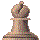
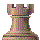

Regles dels Escacs |
| 1.
Els escacs L’objectiu del joc
es realitzar jake-mate al rei rival, o en el cas d’estar en inferioritat
respecte a la disposició de les fitxes de l’adversari,
intentar que la partida acabi en taules, si es produeixen algunes condicions
que més endavant es comentaran. 1.2.
Elements de l’escacs El tauler disposa de 8 files i de 8 columnes, les files es representen amb números del 1 al 8, i les columnes es representen amb lletres de la ‘A’ a la ‘H’. Cada jugador disposa de 16 fitxes, que són dels següents tipus:   Cadascuna de les fitxes té unes característiques determinades, que li permeten fer uns moviments amb unes restriccions concretes segons cada cas. Quan una fitxa d’un color mata a una de l’adversari, vol dir que la treu del tauler. Els moviments possibles
del peó són: El peó pot realitzar dos moviments especials, el peó al pas i la coronació. El peó al pas es produeix quan tenim un peó que ha sortit directament amb dues caselles inicialment, i té un peó adversari a la seva dreta o a la seva esquerra, en aquest cas, el peó adversari pot avançar en diagonal una casella i eliminar el peó rival, el qual estarà en la casella de darrera. La coronació es produeix quan un peó arriba a la fila més oposada del tauler respecte ell (fila 1 o 8 segons el color), en aquest cas, el peó pot ser intercanviat per una altra fitxa, la qual pot ser: torre, alfil, cavall o dama, a l’elecció del jugador. La torre té la característica de moure’s en direcció horitzontal o vertical, tantes caselles com desitgi, sempre que entre l’origen i el destí no hagin fitxes. Cal tenir en compte que la casella destí ha d’estar lliure, o bé que estigui ocupada per una fitxa del contrincant, situació en la qual la fitxa del contrari es mata, i es treu fora del tauler. El cavall es mou de dues maneres possibles, o bé es mou dues caselles en direcció horitzontal i després una casella en vertical, o bé 2 caselles en vertical i altra en horitzontal. Aquesta característica li permet saltar fitxes que tingui al seu voltant. Igual que abans, si al destí hi ha una fitxa de l’altre color la mata. L’alfil permet realitzar moviments en diagonal de tantes caselles com es desitgi, sempre que entre el origen i el destí no hi hagin fitxes, o al destí hi hagi una fitxa de l’adversari. La dama és la fitxa més potent en quant a la llibertat de moviments que proporciona, pot moure’s en diagonal, en vertical i en horitzontal tantes caselles com desitgi, sempre que entre un origen i un destí no hi hagin fitxes, té la capacitat de l’alfil i la torre. Si al destí hi ha una fitxa del color contrari la mata. Finalment tenim el rei, aquesta fitxa té els mateixos moviments que la dama, amb la restricció que només es pot moure una casella. El rei i la torre poden
realitzar un moviment especial anomenat enroc. Tenim dos tipus d’enrocs,
l’enroc llarg i l’enroc curt. L’enroc curt consisteix
en moure el rei dues caselles a la dreta i situar la torre a l’esquerra
del rei. L’enroc llarg consisteix en moure el rei 2 caselles a
l’esquerra i situar la torre a la seva dreta. Per a que es pugui
realitzar ha de complir-se: Sempre comencen la partida les fitxes blanques. Cada jugador realitza un moviment sobre una fitxa i a continuació cedeix el torn, fins que es produeix una situació de jake mate o d’empat. Jake mate vol dir que el rei d’un color està amenaçat en la casella on està i que no pot moure’s d’on està, perquè les caselles del voltant també estan amenaçades o estan ocupades per alguna fitxa del propi color. Que el rei estigui amenaçat, vol dir que alguna fitxa del rival està en posició de matar-la. Durant la partida es poden produir situacions de jake, és a dir, que el rei estigui amenaçat per alguna fitxa del rival en la casella on està, en aquest cas, s’obliga al jugador del color de les fitxes del rei amenaçat a trencar aquest jake. Un jake es pot trencar pels
següents motius: Quan no pot trencar-se el
jake, es produeix el jake mate al rei. El jugador que aconsegueix fer
jake mate guanya la partida. • Rei ofegat. Situació que es produeix quan un jugador no pot moure cap de les seves fitxes, ja sigui perquè estiguin bloquejades o estiguin protegint d’un jake al seu rei. Aleshores el jugador es veu obligat a moure el rei, i aquest no es pot moure perquè la casella actual no està en jake, però si es mogués si que ho estaria. • Es repeteix la mateixa posició durant tres jugades consecutives, és a dir, quan al fer-se 3 jugades seguides(1 jugada: 1 moviment de blanques i 1 de negres), la primera jugada és igual que la tercera. • Quan s’han fet 50 jugades consecutives sense que s’hagi realitzat cap moviment de peons ni cap captura de fitxes. Si un dels jugadors abandona la partida, aleshores l’altre es proclama guanyador. |